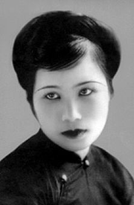

Vợ Ô. Vũ Ngọc Phan. Con Ô. Lê Dư.[1] Sinh năm 1908 ở làng Nông Sơn (Quảng Nam). Học chữ Hán bảy tám năm. Chữ Tây chỉ học đến lớp nhất.
Đã đăng thơ: Phụ nữ tân văn, Ngày nay, Hà Nội tân văn, Đàn bà.

.
Thơ Hằng Phương cùng một giọng êm dịu, ngọt ngào như thơ Vân Đài. Nhưng ít dấu tích thơ Đường và thành thực hơn. Như đoạn cuối trong bài "Lòng quê" trích theo đây lời thơ thực yểu điệu dễ thương. Hằng Phương mượn lời chim để nói nỗi lòng mình. Nhưng thực ta không còn biết đây là lời người hay lời chim. Bởi mối tình ở đây nhẹ nhàng quá, trong trẻo quá. Người thơ tưởng chừng đã biến thành chim...
Tình quê còn đưa thi hứng cho Hằng Phương nhiều lần nữa. Có khi nó lẫn với lòng thương người mẹ đã khuất:
Ngày nay bên khóm trúc
Em thơ khóc rưng rức,
Tìm mẹ biết tìm đâu?
Trời xanh xanh một màu...
Có khi nó chỉ là tình lưu luyến cảnh quê hương:
Ai về cố quận cho ta nhắn
Gửi chút lòng thương nhớ núi sông.
Hằng Phương rất mến cảnh. Ngườu âu yếm nhìn những lúc trăng lên:
Sáng trưng mái ngói nhà ai,
Đôi chim ngỡ buổi ban mai, giật mình.
Những lúc bình minh:
Sương đêm còn đọng trên cành,
Rưng rưng hạt ngọc, long lanh nhìn trời.
Và:
Nách tường đôi lứa chim sâu,
Nằm trong tổ ấm thò đầu nhởn nhơ...
Những bức tranh nho nhỏ ấy đơn sơ mà xinh tươi làm sao. Hồn thi nhân âu cũng thế.
Décembre-1941
Chú thích
(1) Hằng Phương là tên, không phải là biệt hiệu.
LÒNG QUÊ
Tặng VNP (Vũ Ngọc Phan)
Xưa kia em ở bên trời
Ngây thơ chưa rõ cuộc đời là chi,
Mặc cho ngày tháng trôi đi
Tóc mây nào biết có khi bạc đầu!
Chim non ở chốn rừng sâu,
Quanh mình chỉ thấy một màu xanh xanh.
Bình minh buổi ấy gặp anh
Rủ em ra chốn đô thành xa khơi.
Yêu anh, em hoá yêu đời,
Theo anh chắp cánh tung trời bay cao.
Anh đưa em đến vườn đào,
Màu tươi, sắc thắm, em nào dám chê.
Nhưng em luống nặng lòng quê,
Nhớ thương cảnh cũ bốn bề núi non.
Nhớ làng nhớ xóm con con,
Nhớ hương cây quế chon von trên đồi;
Bạn xưa, nhớ yến tha mồi,
Cành xưa, em đỗ trong hồi còn thơ...
Ðường xa, ngoảnh lại ngẩn ngơ,
Trông theo mây trắng thẫn thờ mắt xanh...
(Hà nội tân văn)